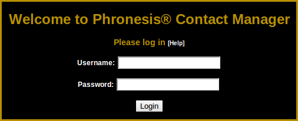
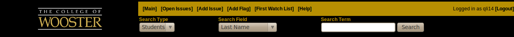
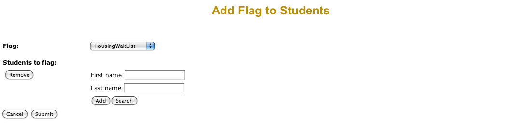
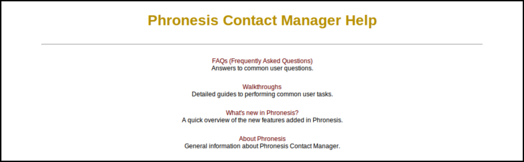
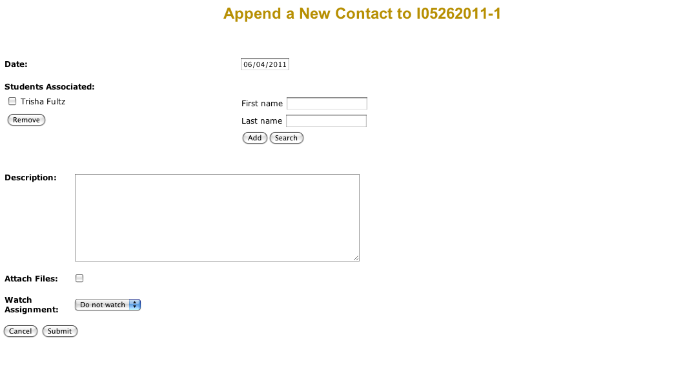
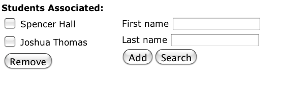
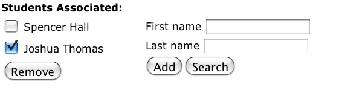
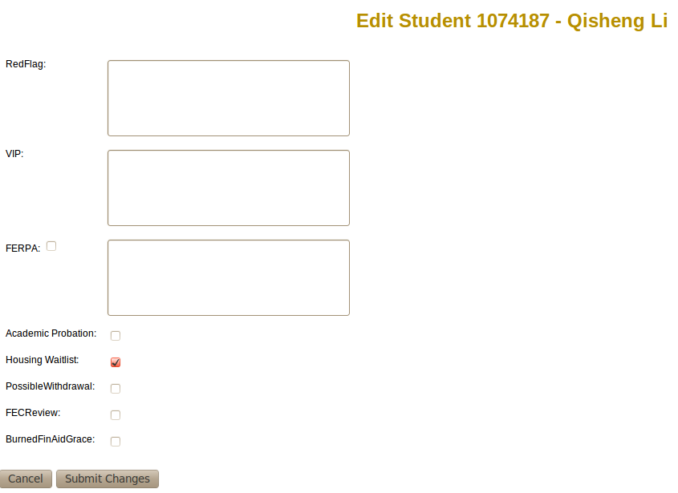
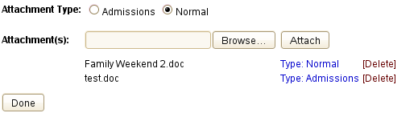

Phronesis Contact Manager Help:
Walkthroughs |
|
|
|
Phronesis requires users to log into the system to establish security, verify access and assign user names to entries.
On the login screen, enter your Novell username and password and click Login. If you mistype your username or password
or you do not have access to the system, you will see a message in the top left hand corner of the screen telling you that your
login information could not be validated with the authentication server, and you will be redirected back to the login screen.

Top | Back to Help |
|
|
This menu is located at the top of every page but the login screen and the help documentation.

Top | Back to Help |
|
|
The main page is the first page you will see when entering the system. On the left will be your
issues that have been open for an extended period of time. In the center, you will see the issues you are watching
and on the right you will see the students that you are watching. To navigate the system, use the links at the top of the page. The top row of
links takes you to pages available through the College of Wooster’s web site. The second row provides links to common tasks
you may wish perform within the system, including viewing recent issues, generating reports, and other user tasks. Depending on your access level, this task bar will vary from the given snapshot.
- Click "Main" to go back to the Main page; this is the page to see when you log in.
- Click "Open Issues" to view all currently open issues.
- Click "Add Issue" to create a new issue.
- Click "Add Flag" to apply a flag to a batch of students.

- Click "Help" to open a new window to the Phronesis Contact Manager help files.

- Click "Logout" in the upper right corner to end your session. You must do this so that other people using your
computer cannot gain unauthorized access to the system.
Top | Back to Help |
|
|
The search bar in the menu allows you to select a "Search Type" and a "Search Field."
The Search Fields available to you depend on what kind of Search Type you select, so it is important when doing a search that you select your Search Type first, and then choose a Search Field.
To initiate a search, choose your "Search Type," choose your "Search Field," and then the desired
search term(s). For example, if you want to search for issues having to with a fire, you would
choose "Issues" for Search Type and "Header" for the Search Field. Then you would enter the word "fire" as your search term. This would display all issues with
a headline containing the word "fire."
If you searched students or issues, when the results for your search appear they will show up with a drop-down menu and checkboxes
next to each result. You can check the checkboxes and select an operation from the drop-down menu to do some functions that it
would be convenient to do in large quantities.
Top | Back to Help |
|
|
There are two ways to create an issue. One is to navigate to a student page. Then, on the student page, click "Add a new issue".
The second way to add a new issue is to click the "Add Issue" link in the top menu bar and fill in all fields of the form.
The "Header" should be a short, one-line description of the issue using keywords that will be useful for
searches (see Using the search menu).
The header will be used as a quick reference for other users of the system.
The Category of an issue gives users a means to apply a grouping to the issue for better searching and consistency.
The issue level button sets the issue to be sensitive in nature (only certain users can see it) or a normal issue (everyone can see it).
The initial contact information includes the Students Associated entry field.
You should include all students whom you wish to associate with the initial contact. For more help
with this step, see Using the "Students Associated" search-and-add tool.
For Description you should write a detailed summary of the contact that took place and be sure to include all students you associated with this contact.
In the bottom left corner of the page, you will see the "Watch Assignment" dropdown menu is set to "Do not watch"
by default. This means that if anyone else makes any changes affecting this issue (e.g., changes its status,
adds a new Contact, etc.), nobody will receive an alert. To change the assignment to make First Watch users (and up)
be set to watch the issue, simply select the "First Watch" option from the list. Selecting "Everyone" will make all users watch the issue and
selecting "Just me" will have only you watch the issue.
If any files need to be attached to the issue (see Attaching documents to issues/contacts),
click on the checkbox marked "Attach Files" and you will be directed to the upload page after clicking "Submit."
Top | Back to Help |
|
|
Select the desired issue, and beside "Contact History" click the "Append
a new contact to this issue" link. Here you can enter the new contact information.
See Creating an issue (above) to view information on how to fill out the Contact fields.

Top | Back to Help |
|
Using the "Students Associated" search-and-add tool |
|
If you are appending a contact to an issue, the "Students Associated" field will automatcially
be automatically populated with all the students currently associated with the issue.
You can remove any students you do not wish to associate with this contact and add other students.
If you are adding a new issue, the "Students Associated" field will begin blank.
To add students to the "Students Associated" field, enter as much of the student's name into the
search fields on the right as you know. Misspellings will not produce the correct student(s) in the results, but typing only
a piece of a student's first and/or last name with correct spelling will generate results that will include the
intended student. For example, if one were looking for John Smith, typing in "john" and "smth" would not
include him in the results, but typing "john" and "sm" would. Once you have completed a search, check the
checkboxes beside any students in the results whom you wish to associate with this contact and click "Add."

To remove students from the "Students Associated" field, check the checkboxes beside the ones you
wish to exclude and click "Remove."

Top | Back to Help |
|
|
Navigate to the student page of the student whose flags/information you wish to edit. If you have permission to edit
this student, there will be a link next to "Student Information" which says "Edit this student." Click it, make
any necessary modifications to the information, and click "Submit Changes."

Top | Back to Help |
|
|
You may only edit the contacts you have created.
If you have information relevant to the issue, you may add it as a new contact.
Navigate to the page of any issue, student, or user associated with the contact that you wish to edit.
Locate the contact you want to edit under "Contact History."
If you have persmission to edit the record, you will see an "Edit" link in the upper right corner of the Contact window.
Click "Edit," make any necessary modifications and click "Submit Changes."
Top | Back to Help |
|
|
| Click "Report Generator" from the Main page. Click on the type of report you would like to generate. The possible five options are
Issues, Students, Users, Interims and First Watch List reports, though not all of these options may appear depending on your level of access. None of the fields in any of the generators are required, so queries can be general if desired.
For Issue reports, use the drop-down menu to select how the date range you input will affect your query. Then type the start and end
dates in the form of "MM/DD/YYYY". Select the status, category, and level of issues that you
wish to see and optionally filter the results based on which user was involved. You may also filter the results to be only issues
that you are watching by clicking the checkbox.
To create a student report, the process is much the same. The drop-down menu at the top selects how the date range will affect the
results. Enter the a class year to only see students of that class year. You may select which housing unit to see results from.
Enter an ethnic code to only see students of a certain ethnicity, and you may filter your results by which staff member
the student is assigned to and any flags that may be set for the student(s).
The user report page is much like the previous two. Select what you want the date range you enter to mean, and then enter
the date range.
Once your report is generated, you may give it a title and save it to your account, so that any time you return to the
Report Generator page, you will have a link to that report. You can do this by entering a name for the report on the report page
itself and clicking the "Save this Report" button.
Top | Back to Help |
|
Printing student/issue/interim/user information |
|
To print a student, issue, interim, or user page, navigate to the page for that student, issue, interim, or user. Click the "Click here for printer-friendly
version" link to open a new window with a printer-friendly version of the student, issue, interim, or user page. Print as you would any other webpage, and
close the window that opened to go back to the regular Phronesis Contact Manager.
Top | Back to Help |
|
Emailing issues and contacts |
|
To e-mail an issue or a contact to somebody, navigate to a page where that issue or contact shows up. For each contact there is a link
that says "Email this contact". Click on this to create a new e-mail in your default e-mail application. This e-mail will
automatically have the subject line and body filled out for you. The body of the email will be the contact ID,
the students involved, the staff involved and the description of the contact.
The body of the e-mail is still changable, so you can add additional information or remove sensitive information as you see fit.
When you click on the "Email this issue" link for an issue, a new e-mail in your default e-mail application will be created. The subject
and body will be automatically filled in for you. The body of the e-mail will be a description of every contact for this particular
issue. Similar to emailing a contact, you can add or remove information in the generated email.
For both issue and contact emails, all you will need to do is enter the email addresses of the people you want to email.
Top | Back to Help |
|
Making all users watch issues |
|
| When creating an issue, there are four options for watching at the bottom (in a dropdown menu) - Do not watch, Just me, First Watch, and Everyone.
The fourth option (Everybody) makes every user who is able to view the issue watch the issue. They are able to stop watching the issue
on their own if it is something that does not pertain to them. See Creating an issue for descriptions of the other watch options.
Also, when viewing an issue page, there is a link at the top ("Everyone watch"). Clicking this will have the same effect.
Top | Back to Help |
|
Changing the level of an issue |
|
| When creating an issue (see Creating an issue), simply select one of the two
radio buttons to mark the issue as either Sensitive or Normal.
Once an issue has been created, the level can be changed by navigating to the issue's page, selecting the appropriate level
from the dropdown, and clicking "Change Level," if you have the ability to change the level.
Top | Back to Help |
|
Attaching documents to issues/contacts |
|
| When creating a new issue (see Creating an issue) or appending a contact to an issue (see Appending a contact to an issue),
click the "Attach Files" checkbox to proceed to the page to attach documents.
On the next screen, browse for the file that you want to attach, click "Attach", and then repeat the process if there are more files to attach. When there are no files left to attach, click "Done" to finish attaching files.

Top | Back to Help |
|
Changing the editable student flags |
|
| Click on "User Tasks" on the main page and navigate to "Change Student Flags" (Note that not every user has access to this page). On this page, type the new flags in the text fields and click "Submit Changes" when done.
Typing "remove" (without the quotes and in that exact case) will reset the flag to its default state of being not set. Any flags that are changed or removed will cause all students previously marked for that flag
to become unmarked. Also, any flags with spaces or special characters (such as apostrophes, commas, etc.) will be removed when the flag is submitted.
Top | Back to Help |
|
Viewing a student's schedule |
|
| To view a student's schedule for the current term, navigate to the desired student's profile page. At the bottom of the "Student Information" section,
there is a link to the student's schedule. Clicking this link will open the schedule in a new window for easy printing and viewing.
Top | Back to Help |
|